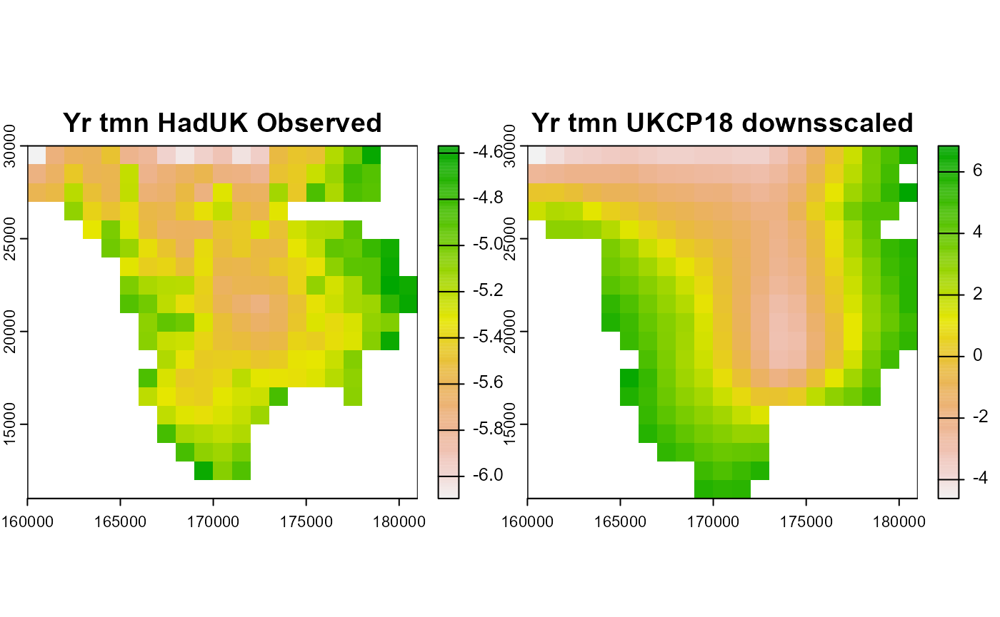
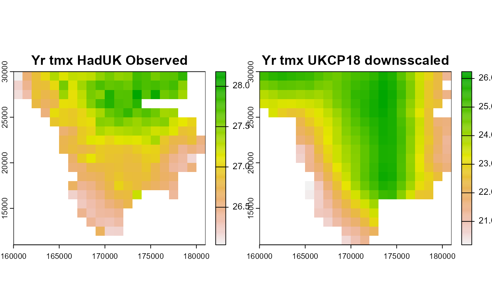
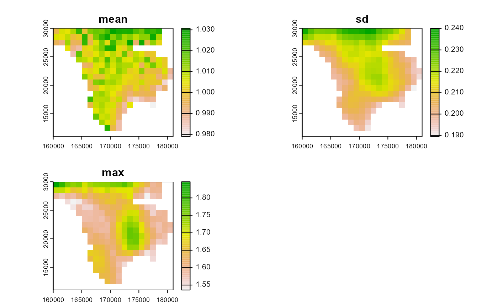
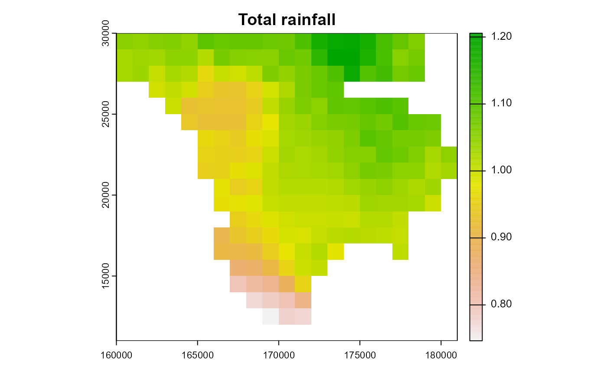
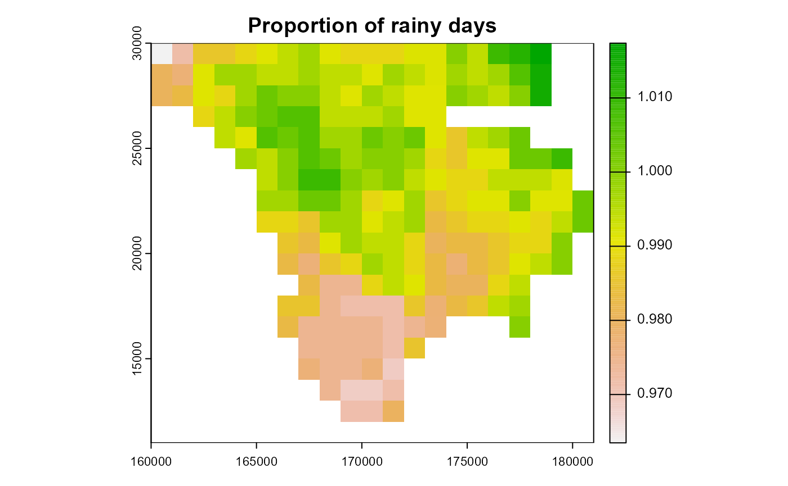

5 Bias Correction
Compares modeled historic data with observational data. Requires comparable raster stacks of observed and modeled data.
Observational data
For observed data we make use of the HadUK 1km gridded data for the Lizard during the year 2018.
dir_haduk<-system.file('extdata/haduk',package='mesoclim')
tminfiles<- list.files(dir_haduk, pattern='tasmin')
tmaxfiles<- list.files(dir_haduk, pattern='tasmax')
rainfiles<- list.files(dir_haduk, pattern='rainfall')
tminhuk<-rast(file.path(dir_haduk,tminfiles))
tmaxhuk<-rast(file.path(dir_haduk,tmaxfiles))
prechuk<-rast(file.path(dir_haduk,rainfiles))
# Crop to area of interest
dir_datasets<-system.file('data',package='mesoclim')
load(file.path(dir_datasets,'dtmf.rda'))
dtmf<-unwrap(dtmf)
e<-ext(project(dtmf,crs(tminhuk)))
tminhuk<-crop(tminhuk,e)
tmaxhuk<-crop(tmaxhuk,e)
prechuk<-crop(prechuk,e)Historic modelled data
Use model outputs for the same historical period as the observational data.
# Get spatially downscaled data
mesolizd<-read_climdata(file.path(system.file('extdata/dscaledata',package='mesoclim'),'mesolizd.rds'))Model data could be directly downscaled to resolution of observed data (in this case 1km) but here we aggregate already downscaled data.
Calculate bias correction models for each variable
Min daily temperature
tmn_bmods<-biascorrect(tminhuk, tmin, tmin,mod_out = TRUE, rangelims = NA)
print(tmn_bmods$models)
#> [[1]]
#>
#> Family: gaussian
#> Link function: identity
#>
#> Formula:
#> v1 ~ s(v2)
#>
#> Estimated degrees of freedom:
#> 8.94 total = 9.94
#>
#> GCV score: 0.02652613
mn_stats<-c(app(tminhuk/tmin,mean),app(tminhuk/tmin,sd),app(tminhuk/tmin,max))
cf_mins<- c(app(tminhuk,min),app(tmin,min))
names(cf_mins)<-c('Yr tmn HadUK Observed','Yr tmn UKCP18 downsscaled')
plot(cf_mins)
Max daily temperature
tmx_bmods<-biascorrect(tmaxhuk, tmin, tmin,mod_out = TRUE, rangelims = NA)
print(tmx_bmods$models)
#> [[1]]
#>
#> Family: gaussian
#> Link function: identity
#>
#> Formula:
#> v1 ~ s(v2)
#>
#> Estimated degrees of freedom:
#> 8.85 total = 9.85
#>
#> GCV score: 0.07824545
cf_maxs<- c(app(tmaxhuk,max),app(tmax,max))
names(cf_maxs)<-c('Yr tmx HadUK Observed','Yr tmx UKCP18 downsscaled')
plot(cf_maxs)
mx_stats<-c(app(abs(tmaxhuk/tmax),mean),app(abs(tmaxhuk/tmax),sd),app(abs(tmaxhuk/tmax),max))
plot(mx_stats)
Daily precipitation
prec_bmods<-precipcorrect(prechuk, prec, prec, mod_out = TRUE, rangelim = NA)
plot(unwrap(prec_bmods$mu_tot),main='Total rainfall')
